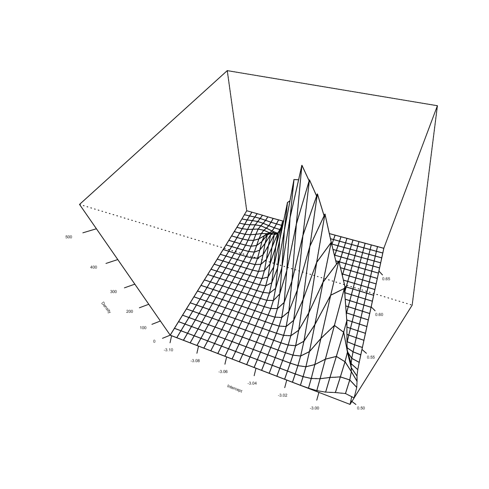
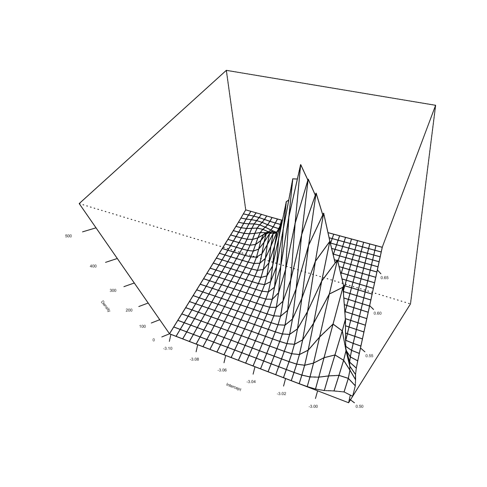

1 Introduction
Empirical likelihood has several advantages over a traditional parametric likelihood. Even though a correctly specified parametric likelihood is usually the most efficient for parameter estimation, semiparametric methods like empirical likelihood, which use a nonparametric estimate of the underlying distribution, are often more efficient when the model is misspecified. Empirical likelihood incorporates parametric model-based information as constraints in estimating the underlying distribution, which makes the parametric estimates interpretable. Furthermore, it allows easy incorporation of known additional information not involving the parameters in the analysis.
Bayesian empirical likelihood (BayesEL) (Lazar 2003) methods employ empirical likelihood in the Bayesian paradigm. Given some information about the model parameters in the form of a prior distribution and estimating equations obtained from the model, a likelihood is constructed from a constrained empirical estimate of the underlying distribution. The prior is then used to define a posterior based on this estimated likelihood. Inference on the parameter is drawn based on samples generated from the posterior distribution.
BayesEL methods are quite flexible and have been found useful in many areas of statistics. The examples include small area estimation, quantile regression, analysis of complex survey data, etc.
BayesEL procedures, however, require an efficient Markov Chain Monte Carlo (MCMC) procedure to sample from the resulting posterior. It turns out that such a procedure is not easily specified. For many parameter values, it may not be feasible to compute the constrained empirical distribution function, and the likelihood is estimated to be zero. That is, the estimated likelihood is not supported over the whole space. Moreover, this support is non-convex and impossible to determine in most cases. Thus, a naive random walk MCMC would quite often propose parameters outside the support and get stuck.
Many authors have encountered this problem in frequentist applications. Such "empty set" problems are quite common (Grendár and Judge 2009) and become more frequent in problems with a large number of parameters (Bergsma et al. 2012). Several authors (Chen et al. 2008; Emerson et al. 2009; Liu et al. 2010) have suggested the addition of extra observations generated from the available data designed specifically to avoid empty sets. They show that such observations can be proposed without changing the asymptotic distribution of the corresponding Wilks’ statistics. Some authors ((Tsao 2013; Tsao and Wu 2013, 2014)) have used a transformation so that the contours of the resultant empirical likelihood could be extended beyond the feasible region. However, in most Bayesian applications, the data are finite in size and not large, for which the asymptotic arguments have little use.
With the availability of user-friendly software packages like STAN
(Carpenter et al. 2017), gradient-assisted MCMC methods like Hamiltonian Monte Carlo
(HMC) are becoming increasingly popular in Bayesian computation. When
the estimating equations are smooth with respect to the parameters,
gradient-based methods would have a huge advantage in sampling from a
BayesEL posterior. This is because Chaudhuri et al. (2017) have shown
that under mild conditions, the gradient of the log-posterior would
diverge to infinity at the boundary of its support. Due to this
phenomenon, if an HMC chain approaches the boundary of the posterior
support, it would be reflected towards its center.
There is no software to implement HMC sampling from a BayesEL posterior
with smooth estimating equations and priors. We describe such a library
called elhmc written for the R platform. The main function in the
library only requires the user to specify the estimating equations,
prior, and respectively their Hessian and gradient with respect to the
parameters as functions. Outputs with user-specified degree of detail
can be obtained.
The elhmc package has been used by practitioners since it was made available
on CRAN. In recent times, various other libraries for sampling from a
BayesEL posterior have been made available. Among them, the library
VBel (Yu and Lim 2024) deserves special mention. The authors compute a
variational approximation of the BayesEL posterior from which samples
can be easily drawn. However, most of the time elhmc is considered to
be the benchmark.
The rest of the article is structured as follows. We start with the
theoretical background behind the software package. In section
2 we first
define the empirical likelihood and construct a Bayesian empirical
likelihood from it. The next part of this section is devoted to a review
of the properties of the log empirical likelihood gradient. A review of
the HMC method with special emphasis on BayesEL sampling is provided
next (Section (sec:hmc)). Section (sec:package) mainly contains the description of the elhmc
library. Some illustrative examples with artificial and real data sets
are presented in Section (sec:examples).
2 Theoretical background
Basics of Bayesian Empirical Likelihood
Suppose \(x=(x_1,\ldots,x_n)\in \mathbb{R}^p\) are \(n\) observations from a distribution \(F^0\) depending on a parameter vector \(\theta=(\theta^{(1)}, \ldots,\theta^{(d)})\in\Theta\subseteq \mathbb{R}^d\). We assume that both \(F^0\) and the true parameter value \(\theta^0\) are unknown. However, certain smooth functions \(g(\theta,x)=\left(g_1(\theta,x),\ldots,g_q(\theta,x)\right)^T\) are known to satisfy \[\begin{equation} \label{smoothfun} E_{F^0}[g(\theta^0,x)]=0. \end{equation} \tag{1}\]
Additionally, information about the parameter is available in the form of a prior density \(\pi(\theta)\) supported on \(\Theta\). We assume that it is neither possible nor desirable to specify \(F^0\) in a parametric form. On the other hand, it is not beneficial to estimate \(F^0\) completely nonparametrically without taking into account the information from (1) in the estimation procedure.
Empirical likelihood provides a semiparametric procedure to estimate \(F^0\), by incorporating information contained in (1). A likelihood can be computed from the estimate. Moreover, if some information about the parameter is available in the form of a prior distribution, the same likelihood can be employed to derive a posterior of the parameter given the observations.
Let \(F\in\mathcal{F}_{\theta}\) be a distribution function depending on the parameter \(\theta\). The empirical likelihood is the maximum of the “nonparametric likelihood" \[\begin{equation} \label{eqn2} L(F)=\prod_{i=1}^n \{F(x_i)-F(x_i-)\} \end{equation} \tag{2}\] over \(\mathcal{F}_\theta\), \(\theta\in\Theta\), under constraints depending on \(g(\theta,x)\).
More specifically, by defining \(\omega_i=F(x_i)-F(x_i-)\), the empirical likelihood for \(\theta\) is defined by, \[\begin{equation} \label{eqn3} L(\theta)\mathrel{\mathop:}=\max_{\omega\in\mathcal{W}_{\theta}}\prod_{i=1}^n \omega_i \end{equation} \tag{3}\] where \[\mathcal{W}_{\theta}=\Big\{\omega: \sum_{i=1}^n\omega_i g(\theta,x_i)=0\Big\}\cap\Delta_{n-1}\] and \(\Delta_{n-1}\) is the \(n-1\) dimensional simplex, i.e. \(\omega_i\geq 0\), \(\forall i\) and \(\sum_{i=1}^n\omega_i=1\). For any \(\theta\), if the problem in (3) is infeasible, i.e. \(\mathcal{W}_{\theta}=\emptyset\), we define \(L(\theta)\mathrel{\mathop:}= 0\).
Using the empirical likelihood \(L(\theta)\) and the prior \(\pi(\theta)\) we can define a posterior as: \[\begin{equation} \label{eqn4} \Pi(\theta|x)=\frac{L(\theta)\pi(\theta)}{\int L(\theta)\pi(\theta) d\theta}\propto L(\theta)\pi(\theta). \end{equation} \tag{4}\]
In Bayesian empirical likelihood (BayesEL), \(\Pi(\theta|x)\) is used as the posterior to draw inferences on the parameter.
Returning back to (3) above, suppose we denote: \[\begin{equation} \label{eqn5} \hat{\omega}(\theta)=\mathop{\mathrm{\arg\!\max}}_{\omega\in\mathcal{W}_{\theta}}\prod_{i=1}^n \omega_i. \qquad\qquad \Big(\text{ i.e. } L(\theta)=\prod^n_{i=1}\hat{\omega}_i(\theta)\Big) \end{equation} \tag{5}\] Each \(\hat\omega_i\geq 0\) if and only if the origin in \(\mathbb{R}^q\) can be expressed as a convex combination of \(g(\theta,x_1),\ldots,g(\theta,x_n)\). Otherwise, the optimisation problem is infeasible, and \(\mathcal{W}_{\theta}=\emptyset\). Furthermore, when \(\hat{\omega}_i>0\), \(\forall i\) is feasible, the solution \(\hat{\omega}\) of (5) is unique.
The estimate of \(F^0\) is given by:1 \[\hat{F}^0(x)=\sum_{i=1}^n\hat{\omega}_i(\theta)1_{\{x_i\leq x\}}.\] The distribution \(\hat{F}^0\) is a step function with a jump of \(\hat{\omega}_i(\theta)\) on \(x_i\). If \(\mathcal{W}_{\theta}=\Delta_{n-1}\), i.e. no information about \(g(\theta,x)\) is present, it easily follows that \(\hat{\omega}_i(\theta)=n^{-1}\), for each \(i=1\), \(2\), \(\ldots\), \(n\) and \(\hat{F}^0\) is the well-known empirical distribution function.
By construction, \(\Pi(\theta|x)\) can only be computed numerically. No analytic form is available. Inferences are drawn through the observations from \(\Pi(\theta|x)\) sampled using Markov chain Monte Carlo techniques.
Adaptation of Markov chain Monte Carlo methods to BayesEL applications poses several challenges. First of all, it is not possible to determine the full conditional densities in a closed form. So techniques like Gibbs sampling (Geman and Geman 1984) cannot be used. In most cases, random walk Metropolis procedures, with carefully chosen step sizes, are attempted. However, the nature of the support of \(\Pi(\theta|x)\), which we discuss in detail below, makes the choice of an appropriate step size extremely difficult.
![Schematic illustration of the Empirical likelihood problem. The support of the empirical likelihood is $\Theta_1$, a subset of $\mathbb{R}^d$. We take $n=8$ observations. The estimating equations $g(x,\theta)$ are $q=2$ dimensional. Note that $\Theta_1$ is non-convex and may not be bounded. The convex hull of the $q$-dimensional vectors, i.e., $\mathcal{C}(\theta,x)$, is a pentagon in $\mathbb{R}^2$. The largest faces of $\mathcal{C}(\theta,x)$ are the one-dimensional sides of the pentagon. It follows that, $\theta^{(k)}\in\Theta_1$ iff the origin of $\mathbb{R}^2$, denoted $0_2$ is in the interior $\mathcal{C}^0(\theta,x)$ of $\mathcal{C}(\theta,x)$. This also implies that the optimal empirical likelihood weights $\hat{\omega}(\theta^{(k)})$ are strictly positive and lie in the interior of the $n-1$, i.e. $7$-dimensional simplex. There is no easy way to determine $\Theta_1$. We check if $0_2\in \mathcal{C}^0(\theta,x)$ or equivalently if $\hat{\omega}(\theta^{(k)})$ are in the interior of $\Delta_7$ in order to determine if $\theta^{(k)}\in \Theta_1$. As the sequence $\theta^{(k)}$ approaches the boundary of $\theta_1$, the convex polytope $\mathcal{C}(\theta^{(k)},x)$ changes in such a way, so that $0_2$ converges to its boundary. The sequence of optimal weights $\hat{\omega}(\theta^{(k)})$, will converge to the boundary of $\Delta_7$. The current software is based on @chaudhuriMondalTeng2017, who show that, under simple conditions, along almost every sequence $\theta^{(k)}$ converging to the boundary of $\Theta_1$, at least one component of the gradient of log-empirical likelihood based posterior diverges to positive or negative infinity.](figures/dirScan3.jpeg)
Figure 1: Schematic illustration of the Empirical likelihood problem. The support of the empirical likelihood is \(\Theta_1\), a subset of \(\mathbb{R}^d\). We take \(n=8\) observations. The estimating equations \(g(x,\theta)\) are \(q=2\) dimensional. Note that \(\Theta_1\) is non-convex and may not be bounded. The convex hull of the \(q\)-dimensional vectors, i.e., \(\mathcal{C}(\theta,x)\), is a pentagon in \(\mathbb{R}^2\). The largest faces of \(\mathcal{C}(\theta,x)\) are the one-dimensional sides of the pentagon. It follows that, \(\theta^{(k)}\in\Theta_1\) iff the origin of \(\mathbb{R}^2\), denoted \(0_2\) is in the interior \(\mathcal{C}^0(\theta,x)\) of \(\mathcal{C}(\theta,x)\). This also implies that the optimal empirical likelihood weights \(\hat{\omega}(\theta^{(k)})\) are strictly positive and lie in the interior of the \(n-1\), i.e. \(7\)-dimensional simplex. There is no easy way to determine \(\Theta_1\). We check if \(0_2\in \mathcal{C}^0(\theta,x)\) or equivalently if \(\hat{\omega}(\theta^{(k)})\) are in the interior of \(\Delta_7\) in order to determine if \(\theta^{(k)}\in \Theta_1\). As the sequence \(\theta^{(k)}\) approaches the boundary of \(\theta_1\), the convex polytope \(\mathcal{C}(\theta^{(k)},x)\) changes in such a way, so that \(0_2\) converges to its boundary. The sequence of optimal weights \(\hat{\omega}(\theta^{(k)})\), will converge to the boundary of \(\Delta_7\). The current software is based on Chaudhuri et al. (2017), who show that, under simple conditions, along almost every sequence \(\theta^{(k)}\) converging to the boundary of \(\Theta_1\), at least one component of the gradient of log-empirical likelihood based posterior diverges to positive or negative infinity.
Provided that the prior is positive over the whole \(\Theta\), which is true in most applications, the support of \(\Pi(\theta|x)\) is a subset of the support of the likelihood \(L(\theta)\) which can be defined as (see Figure 1): \[\begin{equation} \label{support} \Theta_1=\left\{\theta: L(\theta)>0\right\}. \end{equation} \tag{6}\] Thus, the efficiency of the MCMC algorithm would depend on \(\Theta_1\) and the behaviour of \(\Pi(\theta|x)\) on it.
By definition, \(\Theta_1\) is closely connected to the set \[\begin{equation} \label{convexhull} \mathcal{C}(\theta,x)=\left\{\sum_{i=1}^n\omega_ig(\theta,x_i) \Big|\omega\in \Delta_{n-1}\right\}, \end{equation} \tag{7}\] which is the closed convex hull of the \(q\) dimensional vectors \(G(x,\theta)=\{g(\theta,x_i),\ldots,g(\theta,x_n)\}\) in \(\mathbb{R}^q\) (the pentagon in Figure (fig:scheme)). Suppose \(\mathcal{C}^0(\theta,x)\) and \(\partial \mathcal{C}(\theta,x)\) are respectively the interior and boundary of \(\mathcal{C}(\theta,x)\). By construction, \(\mathcal{C}(\theta,x)\) is a convex polytope. Since the data \(x\) is fixed, the set \(\mathcal{C}(\theta,x)\) is a set-valued function of \(\theta\). For any \(\theta\in\Theta\), the problem in (3) is feasible (i.e. \(\mathcal{W}_{\theta}\ne\emptyset\)) if and only if the origin of \(\mathbb{R}^q\), denoted by \(0_q\), is in \(\mathcal{C}(\theta,x)\). That is, \(\theta\in\Theta_1\) if and only if the same \(0_q\in\mathcal{C}^0(\theta,x)\). It is not possible to determine \(\Theta_1\) in general. The only way is to check if, for any potential \(\theta\), the origin \(0_q\) is in \(\mathcal{C}^0(\theta,x)\). There is no quick numerical way to check the latter either. Generally, an attempt is made to solve (3). The existence of such a solution indicates that \(\theta\in L(\theta)\).
Examples show (Chaudhuri et al. 2017) that even for simple problems, \(\Theta_1\) may not be a convex set. Designing an efficient random walk Markov chain Monte Carlo algorithm on a potentially non-convex support is an extremely challenging task. Unless the step sizes and the proposal distributions are adapted well to the proximity of the current position to the boundary of \(\Theta_1\), the chain may repeatedly propose values outside the likelihood support and, as a result, converge very slowly. Adaptive algorithms like the one proposed by Haario et al. (1999) do not tackle the non-convexity problem well.
Hamiltonian Monte Carlo methods solve well-known equations of motion from classical mechanics to propose new values of \(\theta\in\Theta\). Numerical solutions of these equations of motion are dependent on the gradient of the log posterior. The norm of the gradient of the log empirical likelihood used in BayesEL procedures diverges near the boundary of \(\Theta_1\). This property makes the Hamiltonian Monte Carlo procedures very efficient for sampling a BayesEL posterior. It ensures that once in \(\Theta_1\), the chain would rarely step outside the support and repeatedly sample from the posterior.
A Review of Some Properties of the Gradient of Log Empirical Likelihood
Various properties of log-empirical likelihood have been discussed in the literature. However, the properties of its gradients with respect to the model parameters are relatively unknown. Our main goal in this section is to review the behaviour of gradients of log-empirical likelihood on the support of the empirical likelihood. We only state the relevant results here. The proofs of these results can be found in Chaudhuri et al. (2017).
Recall that, (see Figure (fig:scheme)) the support \(\Theta_1\) can only be specified by checking if \(0_q\in\mathcal{C}^0(x,\theta_0)\) for each individual \(\theta_0\in\Theta\). If for some \(\theta_0\in\Theta\), the origin lies on the boundary of \(\mathcal{C}(x,\theta_0)\), i.e. \(0_q\in\partial \mathcal{C}(x,\theta_0)\), the problem in (3) is still feasible, however, \(L\left(\theta_0\right)=0\) and the solution of (5) is not unique. Below we discuss how, under mild conditions, for any \(\theta_0\in\Theta\), for a large subset \(S\subseteq\partial \mathcal{C}(x,\theta_0)\), if \(0_q\in S\), the absolute value of at least one component of the gradient of \(\log\left(L\left(\theta_0\right)\right)\) would be large.
Before we proceed, we make the following assumptions:
\(\Theta\) is an open set.
\(g\) is a continuously differentiable function of \(\theta\) in \(\Theta\), \(q \le d\) and \(\Theta_1\) is non-empty.
The sample size \(n > q\). The matrix \(G(x, \theta)\) has full row rank for any \(\theta \in \Theta\).
For any fixed \(x\), let \(\nabla g(x_i,\theta)\) be the \(q \times d\) Jacobian matrix for any \(\theta \in \Theta\). Suppose \(w=(w_1,\ldots, w_n)\in\Delta_{n-1}\) and there are at least \(q\) elements of \(w\) that are greater than \(0\). Then, for any \(\theta \in \Theta\), the matrix \(\sum_{i=1}^n w_i \nabla g(x_i,\theta)\) has full row rank.
Under the above assumptions, several results about the log empirical likelihood and its gradient can be deduced.
First of all, since the properties of the gradient of the log empirical likelihood at the boundary of the support are of interest, some topological properties of the support need to be investigated. Under the standard topology of \(\mathbb{R}^q\), since \(\mathcal{C}(x,\theta)\) is a convex polytope with a finite number of faces and extreme points, using the smoothness of \(g\), it is easy to see that, for any \(\theta_0\in\Theta_1\) one can find a real number \(\delta>0\), such that the open ball centred at \(\theta_0\) with radius \(\delta\) is contained in \(\Theta_1\). That is, \(\Theta_1\) is an open subset of \(\Theta\).
Now, since \(\Theta_1\) is an open set, the boundary \(\partial\Theta_1\) of \(\Theta_1\) is not contained in \(\Theta_1\). Let \(\theta^{(0)}\) lie within \(\Theta\) and on the boundary of \(\Theta_1\) (i.e. \(\partial\Theta_1\)). Then it follows that the primal problem (3) is feasible at \(\theta^{(0)}\) and \(0_q\) lies on the boundary of \(\mathcal{C}(x,\theta^{(0)})\) (i.e. \(\partial \mathcal{C}(x,\theta^{(0)})\)).
Our main objective is to study the utility of Hamiltonian Monte Carlo methods for drawing samples from a BayesEL posterior. The sampling scheme will produce a sequence of sample points in \(\theta^{(k)}\in\Theta_1\) (see Figure 1). It would be efficient as long as \(\log L\left(\theta^{(k)}\right)\) is large. The sampling scheme could potentially become inefficient if some \(\theta^{(k)}\) is close to the boundary \(\partial\Theta_1\). Thus, it is sufficient to consider the properties of the log empirical likelihood and its gradient along such a sequence converging to a point \(\theta^{(0)}\in\partial\Theta_1\).
From the discussion above it is evident that when \(\theta^{(0)} \in \partial \Theta_1\) the problem in (3) is feasible but the likelihood \(L\left(\theta^{(0)}\right)\) will always be zero and (5) will not have a unique solution. Since \(\mathcal{C}(x,\theta^{(0)})\) is a polytope, and \(0_q\) lies on one of its faces, there exists a subset \(\mathcal{I}_0\) of the observations and \(0\) belongs to the interior of the convex hull generated by all \(g(x_i,\theta^{(0)})\) for \(i \in \mathcal{I}_0\) (in Figure 1, \(\mathcal{I}_0=\{x_4,x_5\}\)). It follows from the supporting hyperplane theorem (Boyd and Vandenberghe 2004) that there exists a unit vector \(a\in \mathbb{R}^q\) such that \[a^{\text{\tiny T}} g(x_i, \theta^{(0)}) =0 \quad \mbox{for} \quad i \in \mathcal{I}_0, \qquad\text{and}\qquad a^{\text{\tiny T}} g(x_{i}, \theta^{(0)}) >0 \quad \mbox{for} \quad i \in \mathcal{I}_0^c.\] From some algebraic manipulation it easily follows that any \(\omega\in\mathcal{W}_{\theta^{(0)}}\) (\(\mathcal{W}_{\theta}\) as defined in (3) with \(\theta=\theta^{(0)}\)) must satisfy,2 \[\omega_i=0 \quad \mbox{for} \quad i \in \mathcal{I}_0^c \qquad\text{and}\qquad \omega_i>0 \quad \mbox{for} \quad i \in \mathcal{I}_0.\]
It is well known that the solution of (5) i.e. \(\hat{w}(\theta)\) is smooth for all \(\theta\in\Theta_1\) (Qin and Lawless 1994). As \(\theta^{(k)}\) converges to \(\theta^{(0)}\), the properties of \(\hat{w}(\theta^{(k)})\) need to be considered. To that goal, we first make a specific choice of \(\hat{w}(\theta^{(0)})\).
First, we consider a restriction of problem (5) to \(\mathcal{I}_0\).
\[\begin{equation} \label{submax} \hat\nu(\theta) =\mathop{\mathrm{\arg\!\max}}_{\nu\in\mathcal{V}_\theta} \prod_{i\in\mathcal{I}_0} \nu_i \end{equation} \tag{8}\] where \[\mathcal{V}_\theta=\left\{\nu: \sum_{i\in \mathcal{I}_0}\nu_i g(x_i,\theta)=0\right\}\cap\Delta_{|\mathcal{I}_0|-1}.\] We now define \[\hat \omega_i(\theta^{(0)}) = \hat\nu(\theta^{(0)}), \quad i \in \mathcal{I}_0 \quad \mbox{and} \quad \hat \omega_i(\theta^{(0)}) = 0, \quad i \in \mathcal{I}_0^c,\] and \[L(\theta^{(0)})= \prod_{i=1}^n \hat \omega_i(\theta^{(0)}).\]
Since \(\theta^{(0)}\) is in the interior of \(\mathcal{I}_0\), the problem (8) has a unique solution. For each \(\theta^{(k)}\in\Theta_1\), \(\hat{\omega}(\theta^{(k)})\) is continuous taking values in a compact set. Thus as \(\theta^{(k)}\) converges to \(\theta^{(0)}\), \(\hat{\omega}(\theta^{(k)})\) converges to a limit. Furthermore, this limit is a solution of (5) at \(\theta^{(0)}\). However, counterexamples show (Chaudhuri et al. 2017) that the limit may not be \(\hat{\omega}_i(\theta^{(0)})\) as defined above. That is, the vectors \(\hat{\omega}(\theta^{(k)})\) do not extend continuously to the boundary \(\partial\Theta_1\) as a whole. However, we can show that: \[\lim_{k\to\infty}\hat\omega_i(\theta^{(k)}) = \hat \omega_i(\theta^{(0)}) = 0, \text{for all\ } i \in \mathcal{I}_0^c.\] That is, the components of \(\hat\omega(\theta^{(k)})\) which are zero in \(\hat\omega(\theta^{(0)})\) are continuously extendable. Furthermore, \[\lim_{k\to\infty}L(\theta^{(k)})=L(\theta^{(0)})=0.\] That is, the likelihood is continuous at \(\theta^{(0)}\).
However, this is not true for the components \(\hat{\omega}_i\left(\theta^{(k)}\right)\), \(i\in\mathcal{I}_0\) for which \(\hat{\omega}_i\left(\theta^{(k)}\right)> 0\).
Since the set \(\mathcal{C}(x,\theta)\) is a convex polytope in \(\mathbb{R}^q\), the maximum dimension of any of its faces is \(q-1\), which would have exactly \(q\) extreme points.3 Furthermore, any face with a smaller dimension can be expressed as an intersection of such \(q-1\) dimensional faces.
In certain cases, however, the whole vector \(\hat{\omega}\left(\theta^{(k)}\right)\) extends continuously to \(\hat{\omega}\left(\theta^{(0)}\right)\). In order to argue that, we define \[\begin{equation} \label{Theta_2} \mathcal{C}(x_{\mathcal{I}},\theta) = \left\{\sum_{i \in \mathcal{I}} \omega_i g(x_i,\theta)\, \Big|\, \omega\in \Delta_{|\mathcal{I}|-1}\right\} \end{equation} \tag{9}\] and \[\begin{equation} \partial\Theta_1^{(q-1)} = \Big\{ \theta: 0 \in \mathcal{C}^0(x_{\mathcal{I}},\theta) \mbox{ for some } \mathcal{I}~ s.t. \mathcal{C}(x_{\mathcal{I}},\theta) \text{has exactly q extreme points} \Big\} \cap\partial\Theta_1. \end{equation}\]
Thus \(\partial\Theta_1^{(q-1)}\) is the set of all boundary points \(\theta^{(0)}\) of \(\Theta_1\) such that \(0\) belongs to a \((q-1)\)-dimensional face of the convex hull \(\mathcal{C}(x,\theta^{(0)})\). Now for any \(\theta^{(0)}\in \partial\Theta_1^{(q-1)}\), there is a unique set of weight \(\nu\in\Delta_{|\mathcal{I}|-1}\) such that, \(\sum_{i\in\mathcal{I}}\nu_ig\left(x_i,\theta^{(0)}\right)=0\). That is the set of feasible solutions of (8) is a singleton set. This, after taking note that \(\hat{\omega}\) takes values in a compact set, an argument using convergent subsequences, implies that for any sequence \(\theta^{(k)}\in\Theta_1\) converging to \(\theta^{(0)}\), the whole vector \(\hat{\omega}\left(\theta^{(k)}\right)\) converges to \(\hat{\omega}\left(\theta^{(0)}\right)\). That is, the whole vector \(\hat{\omega}\left(\theta^{(k)}\right)\) extends continuously to \(\hat{\omega}\left(\theta^{(0)}\right)\).
We now consider the behaviour of the gradient of the log empirical likelihood near the boundary of \(\Theta_1\). First, note that, for any \(\theta \in \Theta_1\), the gradient of the log empirical likelihood is given by \[\nabla \log L(\theta) = -n\sum_{i=1}^n \hat \omega_i(\theta) \hat{\lambda}(\theta)^{\text{\tiny T}} \nabla g(x_i,\theta).\] where \(\hat{\lambda}(\theta)\) is the estimated Lagrange multiplier satisfying the equation:
\[\begin{equation} \label{eq:lagmult} \sum_{i=1}^n \frac{g(x_i,\theta)}{\left\{1+ \hat\lambda(\theta)^{\text{\tiny T}} g(x_i,\theta) \right\}}=0. \end{equation} \tag{10}\]
Note that, the gradient depends on the value of the Lagrange multiplier but not on the value of its gradient.
Now, Under assumption A3, it follows that the gradient of the log empirical likelihood diverges on the set of all boundary points \(\partial\Theta_1^{(q-1)}\). More specifically one can show:
As \(\theta^{(k)}\rightarrow \theta^{(0)}\), \(\parallel\hat \lambda(\theta^{(k)})\parallel\to\infty\).
If \(\theta^{(0)}\in \partial\Theta_1^{(q-1)}\), under as \(\theta^{(k)}\rightarrow \theta^{(0)}\), \({\parallel \nabla \log L(\theta^{(k)}) \parallel}\to \infty\).
Therefore, it follows that at every boundary point \(\theta^{(0)}\) of \(\Theta_1\) such that \(0\) belongs to one of the \((q-1)\)-dimensional faces of \(\mathcal{C}(x,\theta^{(0)})\), at least one component of the estimated Lagrange multiplier and the gradient of the log empirical likelihood diverges to positive or negative infinity. The gradient of the negative log empirical likelihood represents the direction of the steepest increase of the negative log empirical likelihood. Since the value of the log empirical likelihood should typically be highest around the center of the support \(\Theta_1\), the gradient near the boundary of \(\Theta_1\) should point towards its center. This property can be exploited in forcing candidates of \(\theta\) generated by HMC proposals to bounce back towards the interior of \(\Theta_1\) from its boundaries and in consequence reducing the chance of them getting out of the support.
Hamiltonian Monte Carlo Sampling for Bayesian Empirical Likelihood
Hamiltonian Monte Carlo algorithm is a Metropolis algorithm where the successive steps are proposed by using Hamiltonian dynamics. One can visualise these dynamics as a cube sliding without friction under gravity in a bowl with a smooth surface. The total energy of the cube is the sum of the potential energy \(U(\theta)\), defined by its position \(\theta\) (in this case its height) and kinetic energy \(K(p)\), which is determined by its momentum \(p\). The total energy of the cube will be conserved and it will continue to slide up and down on the smooth surface of the bowl forever. The potential and the kinetic energy would, however, vary with the position of the cube.
In order to use the Hamiltonian dynamics to sample from the posterior \(\Pi\left(\theta\mid x\right)\) we set our potential and kinetic energy as follows: \[U(\theta)=-\log\Pi(\theta|x)\quad\text{and}\quad K(p)=\frac{1}{2}p^TM^{-1}p.\] Here, the momentum vector \(p=\left(p_1,p_2,\ldots,p_d\right)\) is a totally artificial construct usually generated from a \(N(0, M)\) distribution. Most often the covariance matrix \(M\) is chosen to be a diagonal matrix with diagonal \((m_1,m_2,\ldots,m_d)\), in which case each \(m_i\) is interpreted as the mass of the \(i\)th parameter. The Hamiltonian of the system is the total energy \[\begin{equation} \label{hamiltonian dynamics} \mathcal{H}(\theta,p)=U(\theta)+K(p). \end{equation} \tag{11}\]
In Hamiltonian mechanics, the variation in the position \(\theta\) and momentum \(p\) with time \(t\) is determined by the partial derivatives of \(\mathcal{H}\) with \(p\) and \(\theta\) respectively. In particular, the motion is governed by the pair of so-called Hamiltonian equations: \[\begin{eqnarray} \frac{d\theta}{dt}&=&\frac{\partial \mathcal{H}}{\partial p}=M^{-1}p, \label{PDE1}\\ \frac{dp}{dt}&=&-\frac{\partial\mathcal{ H}}{\partial \theta}=-\frac{\partial U(\theta)}{\partial \theta}.\label{PDE2} \end{eqnarray} \tag{12}\] It is easy to show that (Neal 2011) Hamiltonian dynamics is reversible, invariant, and volume preserving, which makes it suitable for MCMC sampling schemes.
In HMC we propose successive states by solving the Hamiltonian equations (12) and \[PDE2\]. Unfortunately, they cannot be solved analytically (except of course for a few simple cases), and they must be approximated numerically at discrete time points. There are several ways to numerically approximate these two equations in the literature (Leimkuhler and Reich 2004). For the purpose of MCMC sampling, we need a method that is reversible and volume-preserving.
Leapfrog integration (Birdsall and Langdon 2004) is one such method to numerically integrate the pair of Hamiltonian equations. In this method, a step-size \(\epsilon\) for the time variable \(t\) is first chosen. Given the value of \(\theta\) and \(p\) at the current time point \(t\) (denoted here by \(\theta(t)\) and \(p(t)\) respectively), the leapfrog updates the position and the momentum at time \(t+\epsilon\) as follows \[\begin{eqnarray} p\left(t+\frac{\epsilon}{2}\right)&=&p(t)-\frac{\epsilon}{2}\frac{\partial U(\theta(t))}{\partial\theta},\label{leapfrog1}\\ \theta(t+\epsilon)&=&\theta(t)+\epsilon M^{-1}p\left(t+\frac{\epsilon}{2}\right),\label{leapfrog2}\\ p(t+\epsilon)&=&p\left(t+\frac{\epsilon}{2}\right)-\frac{\epsilon}{2}\frac{\partial U(\theta(t+\epsilon))}{\partial\theta}.\label{leapfrog3} \end{eqnarray} \tag{13}\]
Theoretically, due to its symmetry, the leapfrog integration satisfies the reversibility and preserves the volume. However, because of the numerical inaccuracies, the volume is not preserved. This is similar to the Langevin-Hastings algorithm (Besag 2004), which is a special case of HMC. Fortunately, the lack of invariance in volume is easily corrected. The accept-reject step in the MCMC procedure ensures that the chain converges to the correct posterior.
At the beginning of each iteration of the HMC algorithm, the momentum vector \(p\) is randomly sampled from the \(N(0,M)\) distribution. Starting with the current state \((\theta,p)\), the leapfrog integrator described above is used to simulate Hamiltonian dynamics for \(T\) steps with a step size of \(\epsilon\). At the end of this \(T\)-step trajectory, the momentum \(p\) is negated so that the Metropolis proposal is symmetric. At the end of this T-step iteration, the proposed state \((\theta^*,p^*)\) is accepted with probability \[\min\{1,\exp(-\mathcal{H}(\theta^*,p^*)+\mathcal{H}(\theta,p))\}.\]
The gradient of the log-posterior used in the leapfrog is a sum of the gradient of the log empirical likelihood and the gradient of the log prior. The prior is user-specified and it is hypothetically possible that even though at least one component of the gradient of the log empirical likelihood diverges at the boundary \(\partial\Theta_1\), the log prior gradient may behave in a way so that the effect is nullified and the log posterior gradient remains finite over the closure of \(\Theta_1\). We make the following assumption on the prior mainly to avoid this possibility (see Chaudhuri et al. (2017) for more details).
\[\begin{equation} \liminf_{k\to\infty} \frac{ \log\pi(\theta^{(k-1)}) - \log\pi(\theta^{(k)}) }{ \log L(\theta^{(k-1)} ) - \log L(\theta^{(k)} ) } \ge b(n, \theta^{(0)}). \tag{14} \end{equation}\]
- Consider a sequence \(\{\theta^{(k)} \}\), \(k=1, 2,\ldots\), of points in \(\Theta_1\) such that \(\theta^{(k)}\) converges to a boundary point \(\theta^{(0)}\) of \(\Theta_1\). Assume that \(\theta^{(0)}\) lies within \(\Theta\) and \(L(\theta^{(k)})\) strictly decreases to \(L(\theta^{(0)})\), Then, for some constant \(b(n, \theta^{(0)}) > -1\), we have
The assumption implies that near the boundary of the support, the main contribution in the gradient of the log-posterior with respect to any parameter appearing in the argument of the estimating equations comes from the corresponding gradient of the log empirical likelihood. This is in most cases expected, especially if the sample size is large. For a large sample size, the log-likelihood should be the dominant term in the log-posterior. We are just assuming here that the gradients behave the same way. It would also ensure that at the boundary, the gradient of the log-likelihood and the log-posterior do not cancel each other, which is crucial for the proposed Hamiltonian Monte Carlo to work.
Under these assumptions, Chaudhuri et al. (2017) show that the gradient of the log-posterior diverges along almost every sequence as the parameter values approach the boundary \(\partial \Theta_1\) from the interior of the support. More specifically, they prove that:
\[\begin{equation} \label{eq:postdiv} \Bigl\| \nabla \log \pi(\theta^{(k)} \mid x) \Bigr\| \rightarrow \infty, \hspace{.1in} \mbox{ as } \hspace{.1in} k \rightarrow \infty. \end{equation} \tag{15}\]
Since the \(q-1\) dimensional faces of \(\mathcal{C}(x,\theta^{(0)})\) have larger volume than its faces with lower dimension (see Figure 1), a random sequence of points from the interior to the boundary would converge to a point on \(\partial \Theta_1^{(q-1)}\) with probability \(1\). Thus under our assumptions, the gradient of the log-posterior would diverge to infinity for these sequences with a high probability. The lower dimensional faces of the convex hull (a polytope) are an intersection of \(q-1\) dimensional faces. Although, it is not clear if the norm of the gradient of the posterior will diverge on those faces. It is conjectured that this would happen. However, even if the conjecture is not true, from the setup, it is clear that the sampler would rarely move to the region where the origin belongs to the lower dimensional faces of the convex hull.
As has been pointed out above, the gradient vector would always point towards the mode of the posterior. From our results, since the gradient is large near the support boundary, whenever the HMC sampler approaches the boundary due to the high value of the gradient it would reflect towards the interior of the support and not get out of it. The leapfrog parameters can be controlled to increase efficiency of sampling.
3 Package description
The main function of the package is ELHMC. It draws samples from an
empirical likelihood Bayesian posterior of the parameter of interest
using Hamiltonian Monte Carlo once the estimating equations involving
the parameters, the prior distribution of the parameters, the gradients
of the estimating equations, and the log priors are specified. Some
other parameters which control the HMC process can also be specified.
Suppose that the data set consists of observations
\(x = \left( x_1, ..., x_n \right)\) where each \(x_i\) is a vector of
length \(p\) and follows a probability distribution \(F\) of family
\(\mathcal{F}_{\theta}\). Here
\(\theta = \left(\theta_1,...,\theta_d\right)\) is the \(d-\)dimensional
parameter of interest associated with \(F\). Suppose there exist smooth
functions
\(g\left(\theta, x_i\right) = \left(g_1\left(\theta, x_i\right)\right.\),
\(\ldots\), \(\left. g_q\left(\theta, x_i\right)\right)^T\) which satisfy
\(E_F\left[g\left(\theta,x_i\right)\right] = 0\). As we have explained
above, ELHMC is used to draw samples of \(\theta\) from its posterior
defined by an empirical likelihood.
initial |
A vector containing the initial values of the parameter |
data |
A matrix containing the data |
fun |
The estimating function \(g\). It takes in a parameter vector params as the first argument and a data point vector x as the second parameter. This function returns a vector. |
dfun |
A function that calculates the gradient of the estimating function \(g\). It takes in a parameter vector params as the first argument and a data point vector x as the second argument. This function returns a matrix. |
prior |
A function with one argument x that returns the log joint prior density of the parameters of interest. |
dprior |
A function with one argument x that returns the gradients of the log densities of the parameters of interest |
n.samples |
Number of samples to draw |
lf.steps |
Number of leap frog steps in each Hamiltonian Monte Carlo update (defaults to \(10\)). |
epsilon |
The leap frog step size (defaults to \(0.05\)). |
p.variance |
The covariance matrix of a multivariate normal distribution used to generate the initial values of momentum p in Hamiltonian Monte Carlo. This can also be a single numeric value or a vector (defaults to \(0.1\)). |
tol |
EL tolerance |
detailed |
If this is set to TRUE, the function will return a list with extra information. |
print.interval |
The frequency at which the results would be printed on the terminal. Defaults to 1000. |
plot.interval |
The frequency at which the drawn samples would be plotted. The last half of the samples drawn are plotted after each plot.interval steps. The acceptance rate is also plotted. Defaults to 0, which means no plot. |
which.plot |
The vector of parameters to be plotted after each plot.interval. Defaults to NULL, which means no plot. |
FUN |
the same as fun but takes in a matrix X instead of a vector x and returns a matrix so that FUN(params, X)[i, ] is the same as fun(params, X[i, ]). Only one of FUN and fun should be provided. If both are then fun is ignored. |
DFUN |
the same as dfun but takes in a matrix X instead of a vector x and returns an array so that DFUN(params, X)[, , i] is the same as dfun(params, X[i, ]). Only one of DFUN and dfun should be provided. If both are then dfun is ignored. |
Table 1 enlists the full list of arguments for ELHMC. Arguments data and fun define the problem. They
are the data set \(x\) and the collection of smooth functions in \(g\). The
user-specified starting point for \(\theta\) is given in initial, whereas n.samples is the
number of samples of \(\theta\) to be drawn. The gradient matrix of \(g\)
with respect to the parameter \(\theta\) (i.e. \(\nabla_{\theta}g\)) has to
be specified in dfun. At the moment the function does not compute the
gradient numerically by itself. The prior prior represents the joint density
functions of \(\theta_1,..,\theta_q\), which for the purpose of this
description we denote by \(\pi\). The gradient of the log prior function
is specified in dprior. The function returns a vector containing the values of
\(\frac{\partial}{\partial \theta_1}\pi\left(\theta\right),..,\frac{\partial}{\partial\theta_d}\pi\left(\theta\right)\).
Finally, the arguments epsilon, lf.steps, p.variance and tol are hyper-parameters which control the
Hamiltonian Monte Carlo algorithm.
The arguments print.interval, plot.interval, and which.plot can be used to tune the HMC samplers. They can be
used for printing and plotting the sampled values at specified intervals
while the code is running. The argument which.plot allows the user to only plot the
variables whose convergence needs to be checked.
Given the data and a value of \(\theta\), ELHMC computes the optimal weights
using the el.test function from emplik library (Zhou 2014). The el.test provides
\(\hat{\lambda}\left(\theta^{(k)}\right)\) from which the gradient of the
log-empirical likelihood can be computed.
If \(\theta\not\in\Theta_1\), i.e. problem (5) is not feasible,
then el.test converges to weights all close to zero which do not sum to one.
Furthermore, the norm of \(\hat{\lambda}\left(\theta^{(k)}\right)\) will
be large. In such cases, the empirical likelihood will be zero. This
means that, whenever the optimal weights are computed, we need to check
if they sum to one (within numerical errors) or not.
The function ELHMC returns a list. If argument detailed is set to FALSE, the list contains
samples of the parameters of interest \(\theta\), the Monte Carlo
acceptance rate as listed in table (tab:T2). If detailed is set to TRUE, additional information such as the
trajectories of \(\theta\) and the momentum is included in the returned
list (see Table (tab:T3)).
At the moment ELHMC only allows a diagonal covariance matrix for the momentum
\(p\). The default value for the stepsize epsilon and step number lf.steps are \(0.05\) and
\(10\) respectively. For a specific problem they need to be determined by
trial and error, using the outputs from plot.interval, and print.interval commands.
samples |
A matrix containing the parameter samples |
acceptance.rate |
The acceptance rate |
call |
The matched call |
samples |
A matrix containing the parameter samples |
acceptance.rate |
The acceptance rate |
proposed |
A matrix containing the proposed values at n.samples - 1 Hamiltonian Monte Carlo updates |
acceptance |
A vector of TRUE/FALSE values indicates whether each proposed value is accepted |
trajectory |
A list with 2 elements trajectory.q and trajectory.p. These are lists of matrices containing position and momentum values along trajectory in each Hamiltonian Monte Carlo update. |
call |
The matched call |
4 Examples
In this section, we present two examples of usage of the package. Both examples in some sense supplement the conditions considered by Chaudhuri et al. (2017). In each case, it is seen that the function can sample from the resulting empirical likelihood-based posterior quite efficiently.
Sample the mean of a simple data set
In the first example, suppose the data set consists of eight data points \(v = \left(v_1,...,v_8\right)\):
R> v <- rbind(c(1, 1), c(1, 0), c(1, -1), c(0, -1),
+ c(-1, -1), c(-1, 0), c(-1, 1), c(0, 1))
R> print(v)
[,1] [,2]
[1,] 1 1
[2,] 1 0
[3,] 1 -1
[4,] 0 -1
[5,] -1 -1
[6,] -1 0
[7,] -1 1
[8,] 0 1The parameters of interest are the mean \(\theta = \left(\theta_1, \theta_2\right)\). Since \(E\left[\theta - v_i\right] = 0\), the smooth function is \(g = \theta - v_i\) with \(\nabla_\theta g = \left(\left(1, 0\right), \left(0, 1\right)\right)\):
Function: fun
R> g <- function(params, x) {
+ params - x
+ }
Function: dfun
R> dlg <- function(params, x) {
+ rbind(c(1, 0), c(0, 1))
+ }Functions g and dlg are supplied to arguments fun and dfun in ELHMC. These two functions
must have params as the first argument and x as the second. params represents a sample
of \(\theta\) whereas x represents a data point \(v_i\) or a row in the matrix
v. fun should return a vector and dfun a matrix whose \(\left(i, j\right)\) entry is
\(\partial g_i/\partial\theta_j\).
We assume that both \(\theta_1\) and \(\theta_2\) have independent standard
normal distributions as priors. Next, we define the functions that
calculate the prior densities and gradients of log prior densities as
pr and dpr in the following ways:
Function: prior
R> pr <- function(x) {
+ -.5*(x[1]^2+x[2]^2)-log(2*pi)
+ }
Function: dprior
R> dpr <- function(x) {
+ -x
+ }Functions pr and dpr are assigned to prior and dprior in ELHMC. prior and dprior must take in only one
argument x and return a vector of the same length as \(\theta\).
We can now use ELHMC to draw samples of \(\theta\). Let us draw 1000 samples,
with starting point \(\left(0.9, 0.95\right)\) using 12 leapfrog steps
with step size 0.06 for both \(\theta_1\) and \(\theta_2\) for each
Hamiltonian Monte Carlo update:
R> library(elhmc)
R> set.seed(476)
R> thetas <- ELHMC(initial = c(0.9, 0.95), data = v, fun = g, dfun = dlg,
+ prior = pr, dprior = dpr, n.samples = 1000,
+ lf.steps = 12, epsilon = 0.06, detailed = TRUE)We extract and visualise the distribution of the samples using a boxplot (Figure 2):
R> boxplot(thetas$samples, names = c(expression(theta[1]), expression(theta[2])))Since we set detailed = TRUE, we have data on the trajectory of \(\theta\) as well as
momentum \(p\). They are stored in element trajectory of thetas and can be accessed by
thetas$trajectory. thetas$trajectory is a list with two elements
named trajectory.q and trajectory.p denoting trajectories for \(\theta\) and momentum \(p\). trajectory.q and trajectory.p are
both lists with elements 1, ..., n.samples - 1. Each of these elements is a matrix
containing trajectories of \(\theta\) (trajectory.q) and \(p\) (trajectory.p) at each Hamiltonian
Monte Carlo update.
We illustrate by extracting the trajectories of \(\theta\) at the first update and plotting them (Figure 3):
R> q <- thetas$trajectory$trajectory.q[[1]]
R> plot(q, xlab = expression(theta[1]), ylab = expression(theta[2]),
+ xlim = c(-1, 1), ylim = c(-1, 1), cex = 1, pch = 16)
R> points(v[,1],v[,2],type="p",cex=1.5,pch=16)
R> abline(h=-1); abline(h=1); abline(v=-1); abline(v=1)
R> arrows(q[-nrow(q), 1], q[-nrow(q), 2], q[-1, 1], q[-1, 2],
+ length = 0.1, lwd = 1.5)Figure 2: Posterior distribution of \(\theta_1\) and \(\theta_2\) samples.
Figure 3: Trajectory of \(\theta\) during the first Monte Carlo update.
Figure 4: Samples of \(\theta\) drawn from the posterior.
The specialty in this example is in the choice of the data points in \(v\). Chaudhuri et al. (2017) show that the chain will reflect if the one-dimensional boundaries of the convex hull (in this case the unit square) have two observations, which happens with probability one for continuous distributions. In this example, however, there is more than one point in two one-dimensional boundaries. However, we can see that the HMC method works very well here.
Logistic regression with an additional constraint
In this example, we consider a constrained logistic regression of one
binary variable on another, where the expectation of the response is
known. The frequentist estimation problem using empirical likelihood was
considered by Chaudhuri et al. (2008). It has been shown that
empirical likelihood-based formulation has a major applicational
advantage over the fully parametric formulation. Below we consider a
Bayesian extension of the proposed empirical likelihood-based
formulation and use ELHMC to sample from the resulting posterior.
| \(x=0\) | \(x=1\) | |
|---|---|---|
| \(y=0\) | 5903 | 5157 |
| \(y=1\) | 230 | 350 |
The data set \(v\) consists of \(n\) observations of two variables and two columns \(X\) and \(Y\). In the ith row \(y_i\) represents the indicator of whether a woman gave birth between time \(t - 1\) and \(t\) while \(x_i\) is the indicator of whether she had at least one child at time \(t - 1\). The data can be found in Table 4 above. In addition, it was known that the prevalent general fertility rate in the population was \(0.06179\). 4
We are interested in fitting a logistic regression model to the data with \(X\) as the independent variable and \(Y\) as the dependent variable. However, we also would like to constrain the sample general fertility rate to its value in the population. The logistic regression model takes the form of:
\[P \left(Y = 1 | X = x\right) = \frac{\exp\left(\beta_0 + \beta_1 x\right)}{1 + \exp\left(\beta_0 + \beta_1 x\right)}.\]
From the model, using conditions similar to zero-mean residual and exogeneity, it is clear that:
\[\begin{equation*} E\left[y_i - \frac{\exp\left(\beta_0 + \beta_1 x_i\right)}{1 + \exp\left(\beta_0 + \beta_1 x_i\right)}\right] = 0,\quad E\left[x_i\left\{y_i - \frac{\exp\left(\beta_0 + \beta_1 x_i\right)}{1 + \exp\left(\beta_0 + \beta_1 x_i\right)}\right\}\right] = 0. \end{equation*}\]
Furthermore from the definition of general fertility rate, we get:
\[E\left[y_i - 0.06179\right] = 0.\]
Following Chaudhuri et al. (2008), we define the estimating equations \(g\) as follows:
\[g \left(\beta, v_i\right) = \begin{bmatrix} y_i - \frac{\exp\left(\beta_0 + \beta_1 x_i\right)}{1 + \exp\left(\beta_0 + \beta_1 x_i\right)} \\ x_i\left[y_i - \frac{\exp\left(\beta_0 + \beta_1 x_i\right)}{1 + \exp\left(\beta_0 + \beta_1 x_i\right)}\right] \\ y_i - 0.06179 \\ \end{bmatrix}\]
The gradient of \(g\) with respect to \(\beta\) is given by:
\[\nabla_{\beta}g = \begin{bmatrix} \frac{-\exp\left(\beta_0 + \beta_1 x_i\right)}{\left(\exp\left(\beta_0 + \beta_1 x_i\right) + 1\right)^2} & \frac{-\exp\left(\beta_0 + \beta_1 x_i\right) x_i}{\left(\exp\left(\beta_0 + \beta_1 x_i\right) + 1\right)^2} \\ \frac{-\exp\left(\beta_0 + \beta_1 x_i\right) x_i}{\left(\exp\left(\beta_0 + \beta_1 x_i\right) + 1\right)^2} & \frac{-\exp\left(\beta_0 + \beta_1 x_i\right) x_i^2}{\left(\exp\left(\beta_0 + \beta_1 x_i\right) + 1\right)^2} \\ 0 & 0 \\ \end{bmatrix}\]
In R, we create functions g and dg to represent \(g\) and \(\nabla_{\beta}g\):
Function: fun
R> g <- function(params, X) {
+ result <- matrix(0, nrow = nrow(X), ncol = 3)
+ a <- exp(params[1] + params[2] * X[, 1])
+ a <- a / (1 + a)
+ result[, 1] <- X[, 2] - a
+ result[, 2] <- (X[, 2] - a) * X[, 1]
+ result[, 3] <- X[, 2] - 0.06179
+ result
}
Function: dfun
R> dg <- function(params, X) {
+ result <- array(0, c(3, 2, nrow(X)))
+ a <- exp(params[1] + params[2] * X[, 1])
+ a <- -a / (a + 1) ^ 2
+ result[1, 1, ] <- a
+ result[1, 2, ] <- result[1, 1, ] * X[, 1]
+ result[2, 1, ] <- result[1, 2, ]
+ result[2, 2, ] <- result[1, 2, ] * X[, 1]
+ result[3, , ] <- 0
+ result
}We choose independent \(N\left(0, 100\right)\) priors for both \(\beta_0\) and \(\beta_1\):
Function: prior
R> pr <- function(x) {
+ - 0.5*t(x)%*%x/10^4 - log(2*pi*10^4)
+ },
Function: dprior
R> dpr <- function(x) {
+ -x * 10 ^ (-4)
+ },where pr is the prior and dpr is the gradient of the log prior for \(\beta\).
Our goal is to use ELHMC to draw samples of
\(\beta = \left( \beta_0, \beta_1 \right)\) from their resulting posterior
based on empirical likelihood.
We start our sampling from \((-3.2,0.55)\) and use two stages of sampling. In the first stage, \(50\) points are sampled with \(\epsilon=0.001\), \(T=15\), and the momentum generated from a \(N(0,0.02\cdot I_2)\) distribution. The acceptance rate at this stage is very high, but it is designed to find a good starting point for the second stage, where the acceptance rate can be easily controlled.
R> bstart.init=c(-3.2,.55)
R> betas.init <- ELHMC(initial = bstart.init, data = data, FUN = g, DFUN = dg,
+ n.samples = 50, prior = pr, dprior = dpr, epsilon = 0.001,
+ lf.steps = 15, detailed = T, p.variance = 0.2) 

Figure 5: Contour plot of the non-normalised log posterior with the HMC sampling path (left) and density plot (right) of the samples for the constrained logistic regression problem.
Figure 6: The autocorrelation function of the samples drawn from the posterior of \(\beta\).
In this second stage, we draw 500 samples of \(\beta\) with starting values as the last value from the first stage. The number of leapfrog steps per Monte Carlo update is set to 30, with a step size of 0.004 for both \(\beta_0\) and \(\beta_1\). We use \(N \left(0, 0.02\textbf(I_2)\right)\) as prior for the momentum.
R> bstart=betas.init$samples[50,]
R> betas <- ELHMC(initial = bstart, data = data, fun = g, dfun = dg,
+ n.samples = 500, prior = pr, dprior = dpr, epsilon = 0.004,
+ lf.steps = 30, detailed = FALSE, p.variance = 0.2,print.interval=10,
+ plot.interval=1,which.plot=c(1))Based on our output, we can make inferences about \(\beta\). As an example, the autocorrelation plots and the density plot of the last \(1000\) samples of \(\beta\) are shown in Figure 5.
R> library(MASS)
R> beta.density <- kde2d(betas$sample[, 1], betas$samples[, 2])
R> persp(beta.density, phi = 50, theta = 20,
+ xlab = 'Intercept', ylab = '', zlab = 'Density',
+ ticktype = 'detailed', cex.axis = 0.35, cex.lab = 0.35, d = 0.7)
R> acf(betas$sample[round(n.samp/2):n.samp, 1],
+ main=expression(paste("Series ",beta[0])))
R> acf(betas$sample[round(n.samp/2):n.samp, 2],
+ main=expression(paste("Series ",beta[1])))It is well known (Chaudhuri et al. 2008) that the constrained estimates of \(\beta_0\) and \(\beta_1\) have very low standard error. The acceptance rate is close to \(78\%\). It is evident that our software can sample from such a narrow ridge with ease. Furthermore, the autocorrelation of the samples seems to decrease very quickly with the lag, which would not be the case for most other MCMC procedures.
Acknowledgement
Dang Trung Kien would like to acknowledge the support of MOE AcRF R-155-000-140-112 from the National University of Singapore. Sanjay Chaudhuri acknowledges the partial support from NSF-DMS grant 2413491 from the National Science Foundation USA. The authors are grateful to Professor Michael Rendall, Department of Sociology, University of Maryland, College Park for kindly sharing the data set on which the second example is based.
5 Supplementary materials
Supplementary materials are available in addition to this article. It can be downloaded at RJ-2025-041.zip
6 Note
This article is converted from a Legacy LaTeX article using the texor package. The pdf version is the official version. To report a problem with the html, refer to CONTRIBUTE on the R Journal homepage.
By convention, \(x_i=(x_{i1},x_{i2},\ldots,x_{ip})^T\le x=(x_1,x_2,\ldots,x_p)^T\) iff \(x_{ij}\le x_{j}\) \(\forall j\).↩︎
In Figure (fig:scheme), \(\omega_1=\omega_2=\omega_3=0\), \(\omega_4>0\), and \(\omega_5>0\).↩︎
In Figure (fig:scheme), \(q=2\), and the faces of maximum dimension are the sides of the pentagon. They have \(q=2\) end i.e. extreme points.↩︎
The authors are grateful to Prof. Michael Rendall, Department of Sociology, University of Maryland, College Park, for kindly sharing the data on which this example is based.
↩︎